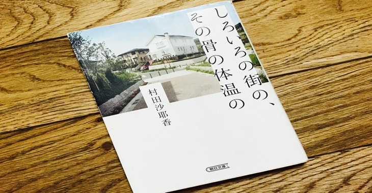

about Favorite
for that personality, I had a hard time sometimes,
I could make few friends despite my desire that want to talk with others more.
I think this is the my worset point.
But not all of them is bad.
thanks to them, I could cultivate my cultural property, I could spend times to read many books.
but I also think this is stupid sticking to only this not to experience times with others. so,
wanna make more and more friends.
Books
In school, while commuting by train, with walking. I always read books.
I think that reading books is a good habit and suitable for me, intensive.
since I was elementary school student. I liked to read seriors of titled "BOKURANO", and "KUROMAJO-SAN".
When I was highschool student, I seldom had friends, so I had a lot of free time alone to read many kind of books.
unfortunately, I am not good at sports, I don't like sports festival but I was not boring because I could read book.
I like to read many type of fictions. espacially my most favorite writers are Sayaka Murata, Yasutaka Tsutui, Nishio Ishin.
that's why you know I have been helped by books.
